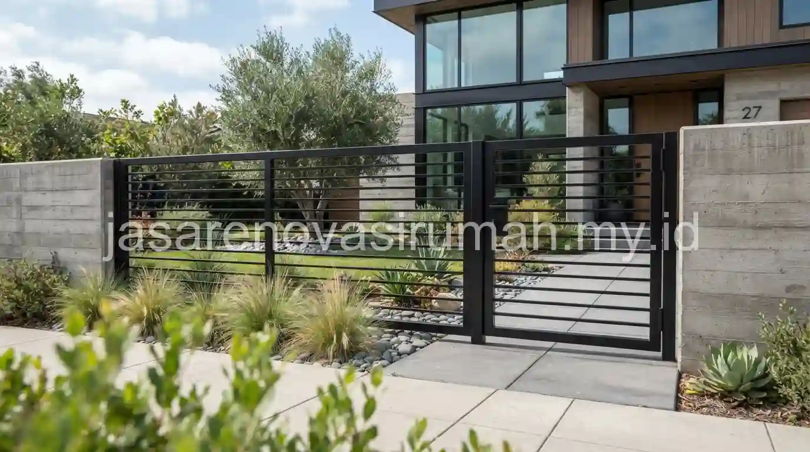
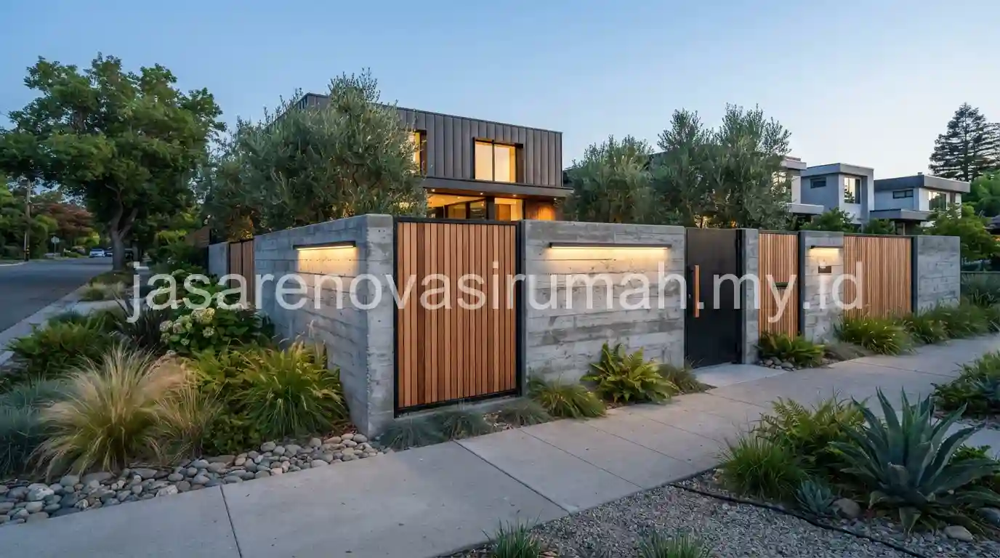

Desain pagar rumah minimalis modern umumnya mengandalkan material besi hollow, beton precast, atau kombinasi kayu, dengan garis tegas dan tinggi proporsional agar terlihat aman sekaligus selaras dengan fasad rumah secara keseluruhan.
Pagar bukan hanya elemen keamanan, tetapi juga bagian penting dari kesan pertama sebuah rumah, sehingga pemilihan desain dan material perlu disesuaikan dengan gaya arsitektur bangunan utama.
Material Apa yang Paling Awet dan Mudah Dirawat untuk Pagar Rumah Minimalis?
Besi hollow dengan finishing cat duco dan beton precast adalah dua material yang paling banyak dipilih karena tahan cuaca dan relatif minim perawatan dibanding material kayu solid.
Berikut perbandingan karakteristik material pagar yang umum digunakan:
| Material | Karakteristik | Estimasi Perawatan |
|---|---|---|
| Besi hollow | Ringan, mudah dibentuk garis modern, tahan lama bila dicat anti karat | Cat ulang setiap 3-5 tahun |
| Beton precast | Kokoh, kesan solid dan modern, tahan cuaca ekstrem | Minim perawatan, cukup dibersihkan berkala |
| Kayu solid | Hangat secara visual, cocok untuk aksen kombinasi | Vernis ulang setiap 1-2 tahun, rentan lapuk bila lembap |
| Kombinasi besi dan kaca | Tampilan modern transparan, kesan lapang | Perawatan kaca berkala agar tetap bening |
Pemilihan material sebaiknya juga mempertimbangkan tingkat privasi yang diinginkan, karena pagar dengan celah terbuka seperti besi hollow memberikan kesan lebih terbuka dibanding pagar beton solid yang menutup pandangan sepenuhnya.
Baca Juga: 15 Desain Rumah Minimalis Modern Tren 2026
Berapa Tinggi Ideal Pagar Rumah Minimalis Modern agar Tetap Aman dan Estetik?
Tinggi pagar rumah minimalis modern umumnya berkisar antara 1,5 hingga 2 meter, cukup untuk memberikan rasa aman tanpa membuat rumah terlihat tertutup sepenuhnya dari lingkungan sekitar.
Beberapa pertimbangan dalam menentukan tinggi pagar:
- Pagar terlalu rendah kurang optimal dari sisi keamanan, terutama untuk rumah di kawasan padat penduduk.
- Pagar terlalu tinggi dan solid bisa membuat fasad rumah terlihat tertutup dan kurang ramah secara visual.
- Kombinasi bagian bawah solid dan bagian atas terbuka (misalnya besi hollow) sering menjadi solusi tengah yang seimbang antara keamanan dan estetika.
Tinggi pagar juga sebaiknya disesuaikan dengan aturan lingkungan atau kompleks perumahan setempat, karena beberapa kawasan memiliki ketentuan tersendiri terkait tinggi maksimal pagar depan rumah.
Bagaimana Memilih Desain Pagar yang Selaras dengan Gaya Fasad Rumah?
Prinsip utamanya adalah menyelaraskan material dan warna pagar dengan elemen fasad utama, sehingga pagar terlihat menyatu dan bukan sebagai elemen terpisah dari bangunan.
Beberapa panduan penyelarasan yang bisa diterapkan:
- Untuk fasad bergaya desain rumah minimalis modern, pagar besi hollow hitam atau abu tua biasanya menjadi pilihan yang senada dengan garis fasad yang bersih dan tegas.
- Untuk fasad bergaya desain rumah industrial modern, pagar dengan aksen bata ekspos atau besi berkarat sengaja (raw finishing) bisa memperkuat karakter industrial secara keseluruhan.
- Untuk fasad bergaya Japandi, pagar kombinasi kayu natural dan besi tipis lebih sesuai dengan kesan hangat yang ingin ditonjolkan.
Penyelarasan warna dan material pagar dengan fasad ini penting agar rumah terlihat sebagai satu kesatuan desain, bukan sekadar penambahan elemen keamanan di bagian depan.
10 Inspirasi Konsep Pagar Minimalis yang Bisa Diterapkan
Berikut ragam konsep pagar yang bisa disesuaikan dengan gaya fasad dan kebutuhan keamanan rumah Anda:
- Pagar besi hollow vertikal hitam doff.
- Pagar beton precast dengan pola garis horizontal.
- Pagar kombinasi besi dan kaca tempered untuk kesan modern transparan.
- Pagar kayu solid dengan sela-sela tipis untuk sirkulasi udara.
- Pagar dorong (sliding gate) otomatis untuk rumah dengan carport luas.
- Pagar rendah tanpa daun pintu besar, mengandalkan pagar dorong samping.
- Pagar dengan aksen tanaman rambat sebagai elemen hijau tambahan.
- Pagar beton dengan panel GRC berpola geometris.
- Pagar besi dua warna (dua-tone) senada dengan warna kusen rumah.
- Pagar minimalis tanpa ornamen dengan bel dan intercom terintegrasi.
Untuk memastikan desain pagar benar-benar sesuai dengan proporsi fasad rumah Anda, konsultasikan kebutuhan ini dengan jasa arsitek profesional yang dapat mempertimbangkan proporsi tinggi, material, dan warna secara menyeluruh bersama desain bangunan utama.
Kesalahan Umum Saat Mendesain Pagar Rumah Minimalis
Kesalahan yang paling sering terjadi adalah memilih desain pagar secara terpisah tanpa mempertimbangkan keselarasan dengan fasad rumah, sehingga tampilan keseluruhan terlihat tidak menyatu.
Kesalahan lain yang perlu dihindari:
- Menggunakan material besi tanpa lapisan anti karat yang memadai, terutama untuk area dekat pantai atau curah hujan tinggi.
- Membuat pagar terlalu solid sehingga menghalangi sirkulasi udara dan pandangan ke halaman depan.
- Mengabaikan aturan tinggi pagar yang berlaku di lingkungan atau kompleks perumahan setempat.

Pada akhirnya, desain pagar rumah minimalis modern yang baik memadukan aspek keamanan, keselarasan visual dengan fasad, dan kemudahan perawatan jangka panjang.
Konsultasikan konsep pagar Anda dengan jasa arsitek profesional dan lihat referensi tambahan pada portofolio proyek arsitektur kami sebelum menentukan desain akhir.